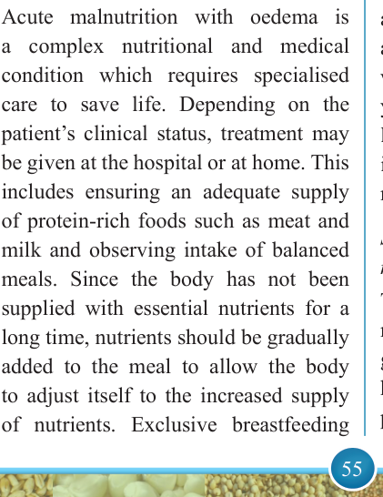
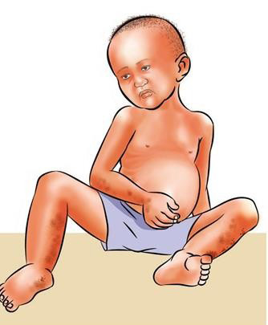

55


Food and Human Nutrition

Form Two

Figure 3.1: A child with acute malnutrition
with oedema
Prevention and treatment of acute malnutrition with oedema
Acute malnutrition with oedema is a complex nutritional and medical condition which requires specialised care to save life. Depending on the patient’s clinical status, treatment may be given at the hospital or at home. This includes ensuring an adequate supply of protein-rich foods such as meat and milk and observing intake of balanced meals. Since the body has not been supplied with essential nutrients for a long time, nutrients should be gradually added to the meal to allow the body to adjust itself to the increased supply of nutrients. Exclusive breastfeeding
is recommended up to six months, followed by continued breastfeeding up to two years of life, along with timely introduction of nutrient-rich complementary foods. These foods include milk, fish, eggs and edible insects like longhorn grasshoppers as well as winged termites to ensure an adequate nutrient supply for children at this fast growth stage. Seek medical attention to rule out any presence of infection.
(ii) Acute malnutrition without oedema
Acute malnutrition without oedema occurs to an individual because of a very low intake of energy or other essential nutrients. The body adapts to the shortage of food by losing body fats and muscles to supply the energy needed, resulting in a very thin, weak and wasted body. Both children and adults can suffer from acute malnutrition without oedema, but it mostly affects young children in the first two years of life. Acute malnutrition without oedema in children was previously known as marasmus.
Signs and symptoms of acute malnutrition without oedema
The signs and symptoms of acute malnutrition without oedema include growth
retardation,
acute
fatigue,
hunger, increased appetite, diarrhoea, prominent ribs, dizziness, dry skin
17/09/2025 16:30